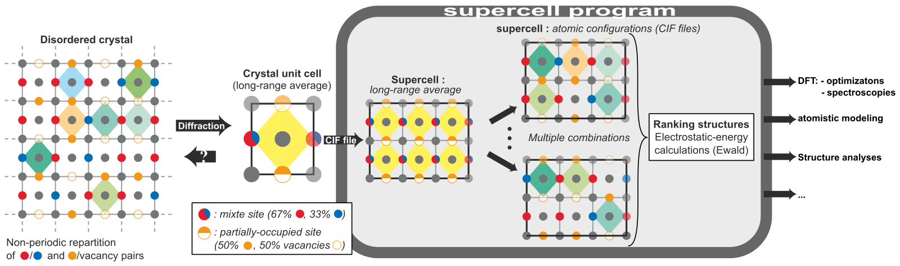

Introduction

A supercell approach is very old, universal and theoretically clean method for approximation of materials with point disorder1. But the method mostly applies to some particular cases, like low amount of impurity (one per supercell) or random disorder with special quasirandom structure (SQS) approximation2, because the number of derivative structures is one in these cases. In general, the number of derivative structures is high enough to be generated "by hand". A few programs exist, which can help to generate derivative structures (see review ). We believe that supercell program is one of the best choice, because the software was created to solve most of the technical problems of supercell approximation. The program includes algorithms for structure manipulation, supercell generation, permutations of atoms and vacancies, charge balancing, detecting symmetry-equivalent structures, electrostatic energy calculations and sampling output derivative structures. The software works with CIF files, therefore it is compatible with most of DFT software (VASP , CASTEP , Wien2k etc). It has a powerful command line interface and works out-of-box on Linux and OSX platforms. The correctness of the program were verified by available literature data. The documentation includes open access paper, program interface manual, tutorial and variety of examples.
1Buerger, M. J. (1947). Derivative Crystal Structures. The Journal of Chemical Physics, 15(1), 1–16.
2Zunger, A., Wei, S. H., Ferreira, L. G., & Bernard, J. E. (1990). Special quasirandom structures. Physical Review Letters, 65(3), 353–356.
 PDF
PDF HTML
HTML